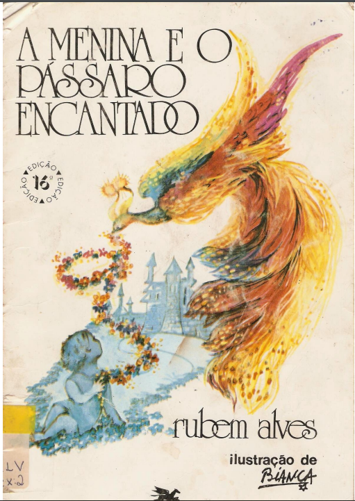

Por Fabiano Cambota
Essa história é sobre liberdade
Quem vai embora deixa saudade
Um menino privilegiado
Criava solto um pássaro encantado
O pássaro encantado levantava voo pra algum lugar
E quando voltava trazia nas plumas as cores de lá
Voltou todo branco feito um algodão
Dizendo que havia visto terras em que a neve cobre o chão
Montanhas geladas e o vento a soprar
Mas que deu saudade
Deu uma vontade de te ver de novo e eu resolvi voltar
Com as plumas vermelhas ele apareceu
Dizendo que havia visto terras em que nunca mais choveu
Terras em que o Sol vai rachando o chão
Terras em que os velhos
Pobres e meninos rezam pelo fim da seca no sertão
Cansado de tanta saudade um plano infalível tirou da cartola
E aproveitando a distração prendeu o pássaro encantado na gaiola
O pássaro encantado se entristeceu com tanto sofrimento
E as plumas coloridas foram transformando-se num tom cinzento
Por que não me solta?
Me deixa voar
Se a saudade que eu sinto por você
É que me faz voltar
Ai essa saudade que me faz pensar
Que enquanto houver saudade
Vai haver vontade de te ver de novo
Pode me esperar
Essa história é sobre liberdade
Quem vai embora deixa saudade
Então pode ficar sossegado se eu te deixar
Pode esperar
Que eu volto pro seu lado
Esta estória é sobre uma menina que tinha como melhor amigo um pássaro encantado. Cada vez que ela sentia saudades do seu amigo, ele ficava mais colorido e mais belo. Quando decidiu prendê-lo numa gaiola, percebeu que não o amava estando preso. Assim, por meio de simbolismos, Rubem Alves ensina crianças e adultos sobre a liberdade, nosso bem mais precioso. É graças a ela que aprendemos a amar, ter amizades, sentir saudades e respeitar o outro. E, por envolver temas tão humanos, A menina e o pássaro encantado é uma estória que faz sucesso há mais de 30 anos!
Autor do livro Rubem Alves
Baixe o livro
